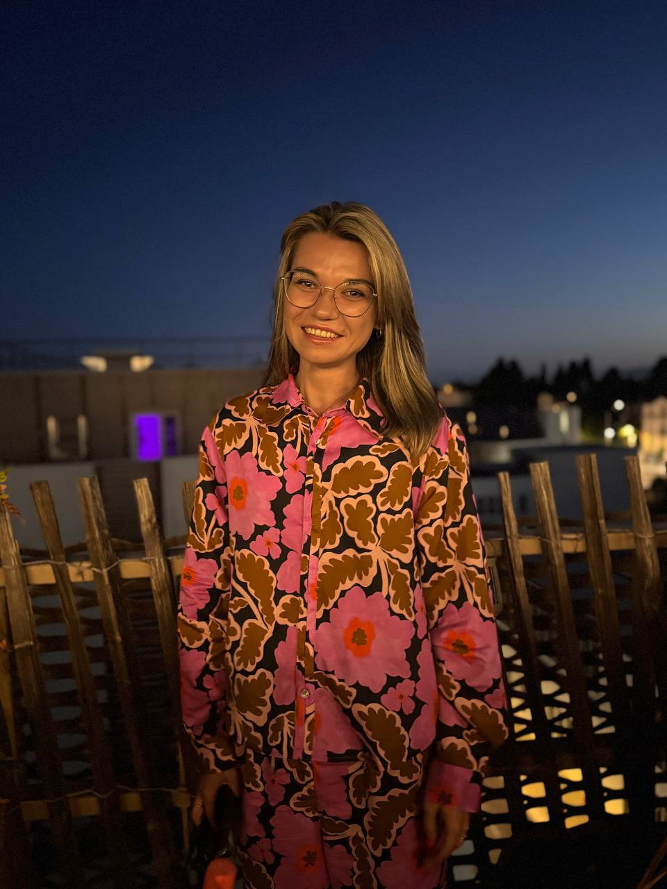
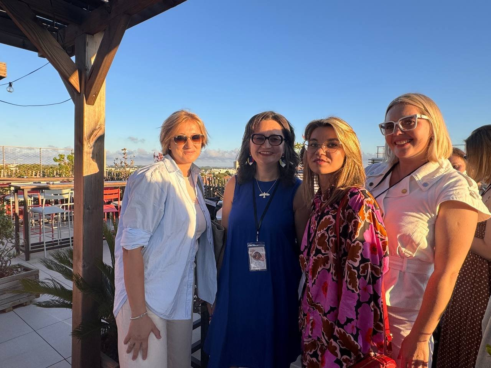
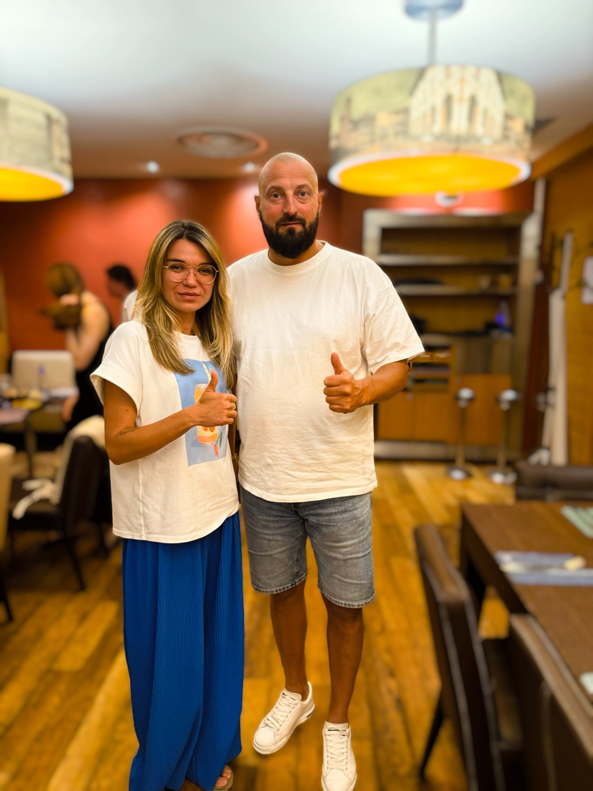

Предпринимательство
Собственное маркетинговое агентство, работа с командой и клиентами, опыт роста, кризисов, закрытия компании и смены профессионального направления.
Я Дарья Терёхина. Бизнес-коуч, предприниматель, наставник и человек, который не раз пересобирал свой способ жить и работать, когда прежний переставал подходить.

✧Бизнес позволяет видеть факты и последствия решений. Трекинг — проверять гипотезы. Коучинг — исследовать мышление и выбор человека, не подменяя их чужими ответами.
Собственное маркетинговое агентство, работа с командой и клиентами, опыт роста, кризисов, закрытия компании и смены профессионального направления.
Работа с гипотезами, ограничениями и результатами. Более 120 предпринимателей и специалистов прошли обучение трекингу при моём участии.
Развивающий диалог по международным стандартам, внимание к автономии клиента, решениям, ценностям и их воплощению в практике.
Я не учу вас быть правильным предпринимателем и не подсказываю, какой жизни вам следует хотеть. Я задаю вопросы, возвращаю наблюдения и помогаю отделять реальность от привычных объяснений.
Вместе мы определяем, какое решение действительно ваше, на каких фактах оно держится и как вы будете проверять его через действия.
Не подменяю ваше решение советом.
Уважение к вам без ухода от сложных вопросов.
Проверяем факты, критерии и последствия действий.
Коучинг не заменяет терапию или консалтинг под ключ.
Для меня важны профессиональные сообщества, живой разговор, новые идеи и люди, рядом с которыми можно думать вслух, спорить, сомневаться и расти.


От найма и собственного бизнеса до эмиграции и нового этапа. Через эти тексты можно лучше понять, как я думаю, принимаю решения и работаю с реальностью.
Поворот от успешной карьеры к собственному выбору.
Как я купила себе «свободу» в кредит и чему меня научил бизнес.
Эмиграция, обнуление и новые опоры.
Почему «говорить как женщина» — это ловушка.
От выживания к управлению смыслами.
Как не сдать свою жизнь в аренду чужим ограничениям.
Моя подготовка включает международные программы коучинга, обучение работе с вниманием и отдельные специализации, а также трекинг и наставничество. Все документы и подтверждённые часы собраны по годам.
Сертификаты 2026–2021 →Начните с одной конкретной ситуации. Или напишите, если хотите понять, подойдёт ли вам этот формат.